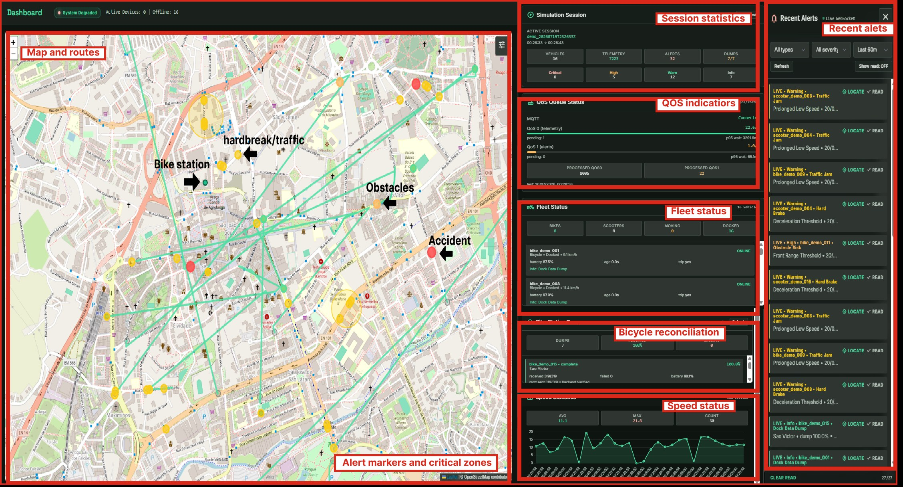
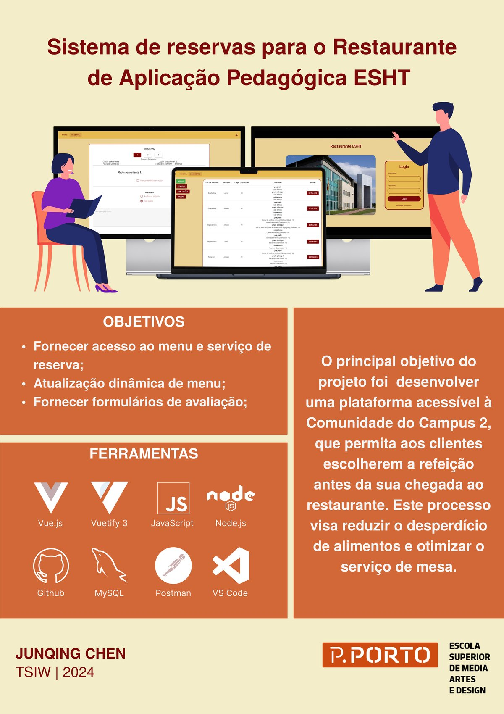
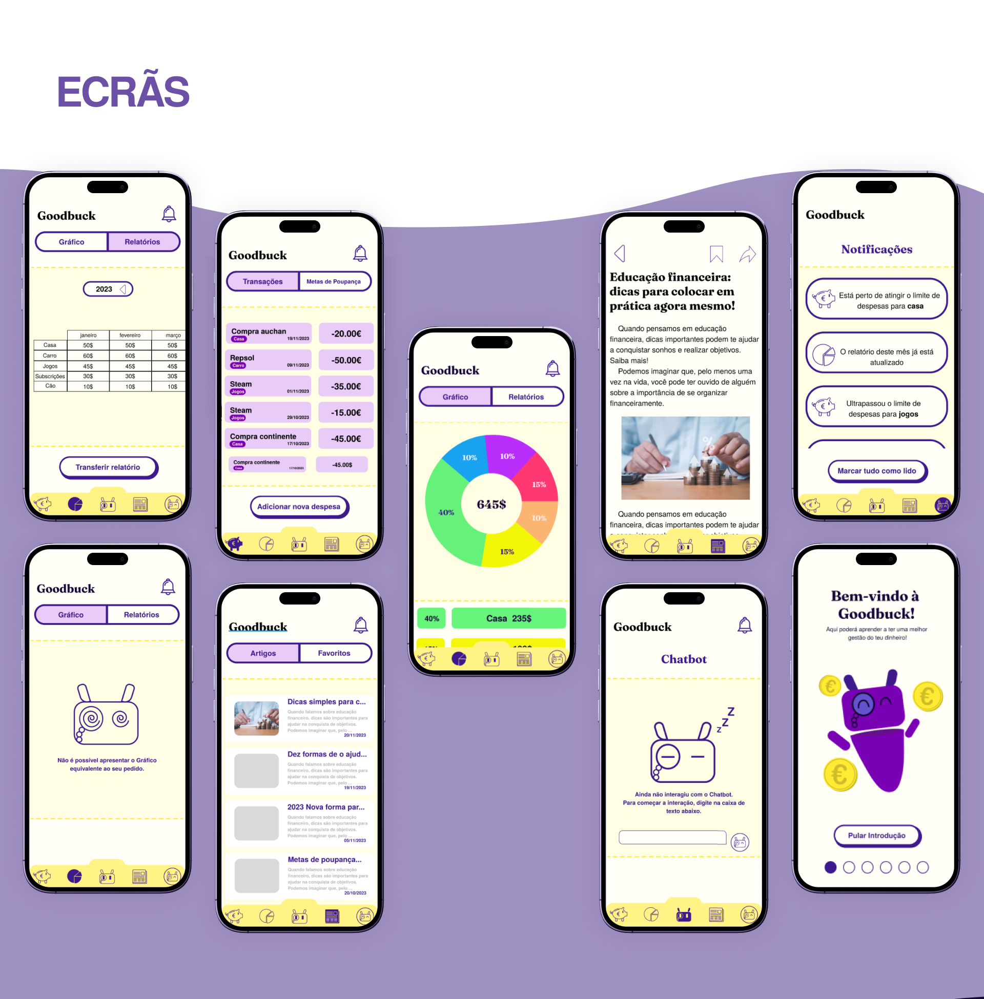
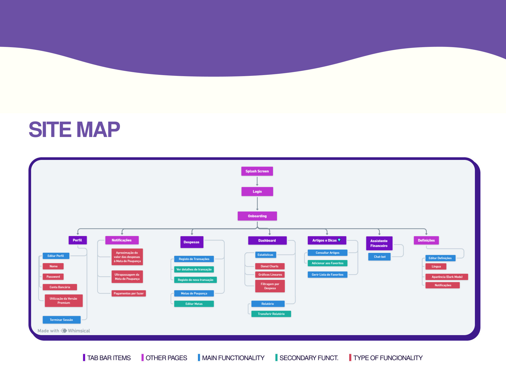

全栈开发工程师 & 交互工程设计
现居葡萄牙维亚纳堡 (Viana do Castelo)。就读于葡萄牙米尼奥大学 (M.Sc.)，毕业于波尔图理工学院 ESMAD 设计与艺术学院 (B.Sc.)。
具备“用户体验与交互原型 ➔ 前端交互 ➔ 后端 API 与数据链路 ➔ 容器化部署”的全链路交付能力。
涵盖物联网高并发处理、企业级全栈预约系统与敏捷协作财务应用




立足 ESMAD 设计学院 + 计算机工程双背景，打造“原型设计 ➔ 代码实现 ➔ 架构部署”闭环
深入理解用户心理与操作链路，能够输出专业高保真可交互原型并转化为前端工程代码。
掌握现代主流前后端框架，注重代码可读性、状态管理、模块化拆分与接口契约。
具备关系型与时序型数据库应用能力，熟悉物联网消息协议与标准容器化编排。
对自主智能体架构、大语言模型工程工作流与端到端自动化抱有浓厚兴趣，积极探索 Agent 赋能的全流程代码构建与创新交互。
结合顶级工程学院与媒体艺术设计学院的双重学术积淀
📍 葡萄牙布拉加 / 吉马良斯
专注于软件工程、物联网架构及数据可视化系统研究。主导 UrbMobSense 城市微出行物联网课题。
📍 葡萄牙波尔图 · ESMAD (Escola Superior de Media Artes e Design) 传媒艺术与设计学院
系统接受计算机技术与人机交互双重培养，涵盖高级原型设计、认知人机工学、云服务接口、移动计算等。
已核验波尔图理工学院官方印章与学术档案 (2024年8月签发 · PDF)
教育部留服中心权威核验认证书 (中国留学网官方认证 · JPG)